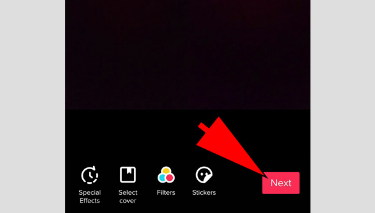
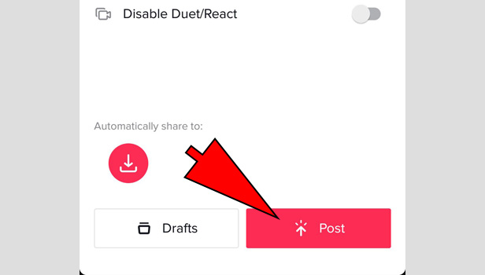

1.Scroll Through TikTok Till You Find A Good Sound That You Like

2.Once You Find Your Sound Click On It And Press "Use This Sound"

3.Record Yourself
4.Once You Are Done Recording Press Next

5.You Can Add A Caption If You Like
6.Lastly Post
Best Times To Post On TikTok: Monday: 6 AM est, 10 AM est, & 10 PM esr Tuesday: 2 AM est, 4 AM est, & 9 AM est Wednesday: 7 AM est , 8 AM est , & 11 PM est Thursday: 12 AM est, 9 AM est, & 7 PM est Friday: 5 AM est, 1 PM est, & 3 PM est Saturday: 11 AM est, 7 PM est, & 8 PM est Sunday: 7 AM est, 8 AM est, 4 PM est